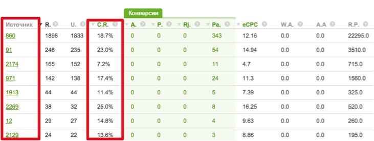

Первый пост про основы трекинга зашел на ура, было порядка 7000 прочтений и много вопросов. Потому я продолжаю эту серию, показывая базовое применение трекера в популярных ситуациях. Сегодня я хочу задеть темы приватности трафика вебмастера, эффективности аналитики и удобства ведения нескольких рекламных кампаний одновременно через трекер. Соответственно, разделим пост на несколько частей. Показывать буду на основе AdsBridge, а вы уже адаптируйте под свои предпочтения.
Приватность вашего трафика
Честно говоря, я поражаюсь беспечности вебмастеров. В то время, как у каждой партнерской сети есть свой отдел медиабаинга/арбитража (называйте как угодно, смысл не меняется), арбитражники все еще сливают к ним трафик напрямую, прозрачно показывая источник.
Причем знаете что самое интересное, вебмастер же играется с параметрами рекламных сетей, подробно отслеживает эффективность тизеров и площадок, все это анализирует и оптимизирует кампании. И все это прекрасно видно в партнерке, как-нибудь вот так:
Источник – это номер площадки в рекламной сети. И по каждому источнику есть CR, количество конверсий, апрув, короче все вплоть до самого главного показателя – eCPC (заработка на переходе). Отдельные кадры думают, что эта инфа партнерке ничего не скажет, потому что самого источника то не видно. Но это бред собачий, для каждого перехода в любой ПП пишется реферер, в котором как раз и стоит редирект рекламной сети.
Я тут хотел сказать, что отделу арбитража партнерки собрать эту инфу в кучу и начать действовать будет не сложно, но тут на самом деле ничего и собирать не надо – вся ваша красивая связка удобно размещена на одном листе.
Комментарии
Вы сможете добавлять комментарии, только после регистрации.
Зарегистрироваться